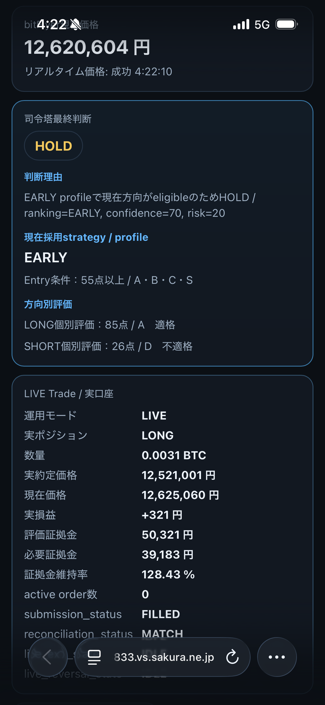

お試しで実戦投入しました。

プログラミング未経験から、ChatGPTにコードを書いてもらって1ヶ月で作りました。
個人で開発しているBTC自動売買システム「ORIGIN」の開発記録。 相場分析、PaperTrade、戦略比較、Commander、LIVE取引まで、 少しずつ育っていく過程を残しています。
ORIGINは、BTC相場を分析しながら複数の戦略を比較し、 条件が整ったときに売買判断を行う個人開発の自動売買システムです。
このサイトは販売ページではなく、設計・検証・失敗・改善を記録するための開発日記です。
現在は個人利用を目的として開発・検証しています。 長期運用で十分な安定性と結果が確認できた場合には、 いつか一般向けに公開することも考えています。
実口座連携の安全確認と経過観察
長期観察・段階的改善
公開後はCloudflare Web Analyticsを接続して、 訪問数・ページビュー・参照元・利用端末などを確認できるようにします。
現在は未公開の見本ページなので、実データの計測はまだ始まっていません。
閲覧数は公開ページ上に見せず、管理者だけが解析画面で確認する想定です。
サイト公開後に発行される専用トークンを入れるだけで計測を開始できます。

実口座のポジション、約定価格、損益、照合状態などをスマホから確認しやすい形へ。 売買ロジックには触れず、表示だけを調整。
LONG / SHORTを個別に評価し、現在採用中のstrategy/profileに応じて エントリー適格判定を行う構造を調整。PaperTradeで挙動を観察。
複数strategyを並行評価し、成績の良い方式をPaperTradeへ反映する仕組みを実装。 「考えるだけ」から「比較して選ぶ」システムへ。
bitFlyerの価格取得とMACD分析からスタート。 小さなプログラムを少しずつ積み重ね、現在の形へ。